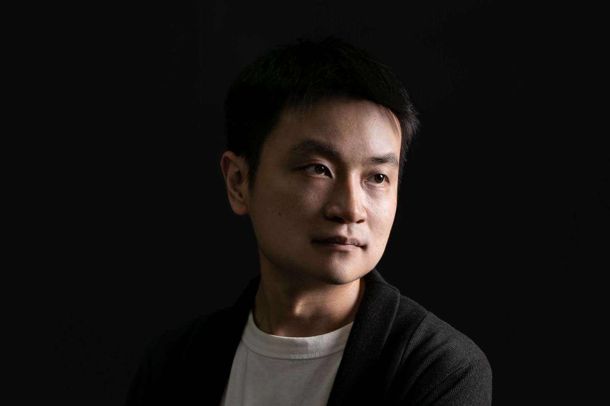
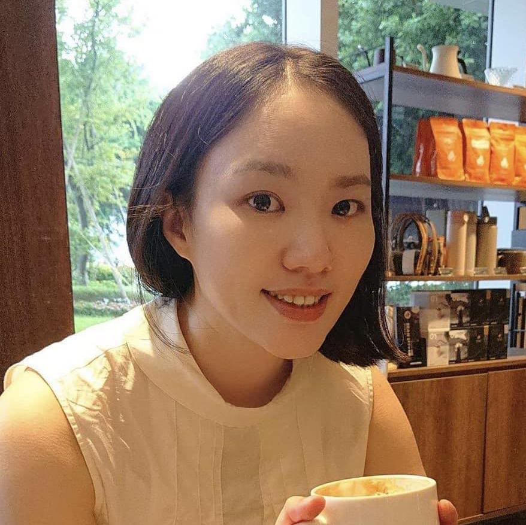
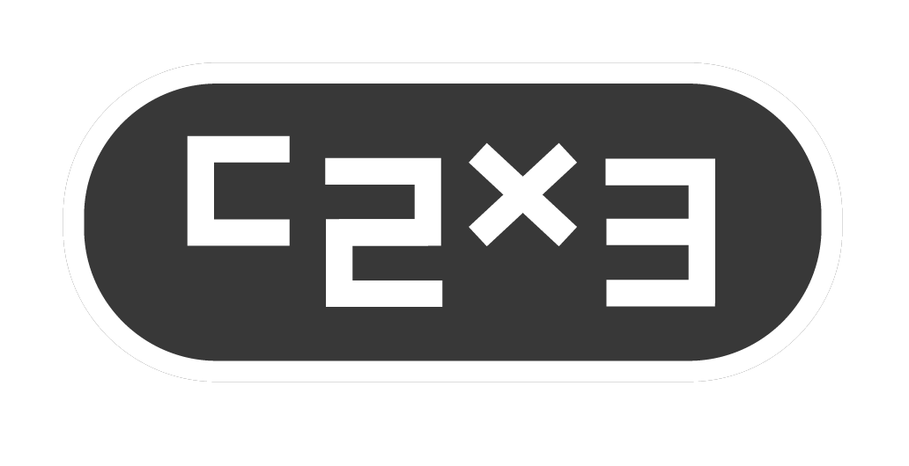

ABOUT THE FESTIVAL
資料待提供
CURATORIAL STATEMENT
在人工智慧和資訊技術迅速發展的當代，浮現出一種尚未被完全指認的存在形式，它在資訊海洋中運作，在大的資料流和演算法間生成出未曾見的樣態，並悄然嵌合進我們所處的世界。
2026臺北數位藝術節以「灰色自動體」（Gray Autonomous Entity）為主題，關注數位藝術如何在人工智慧的快速發展中，重新思考那些難以清楚認識、持續發展且無可迴避的新型態能動性、環境關係和藝術議題。
當人工智慧作為一種新的存在者（entity），成為影響藝術家的日常經驗乃至創作時，數位藝術應如何回應這種不同於工具、媒介所構成的存在？
它產生出另人感到既熟悉又陌生的經驗：熟悉，是因為它調用了人類共同累積的資料與記憶；陌生，則來自於自動性的湧現。
當資料經由編碼被壓縮進入模型，轉換為高維向量空間，影像、語言、聲音彼此建立新的鄰近關係，系統也在龐大的運算過程中形成自身的生成能力。每一次生成，都重新組織集體經驗；然而，模型承載著資料、記憶、文化，當中卻也存有權力結構、偏見與倫理問題。
如同植物、土壤、菌絲、動物、人類、機器一般，它如今也成為構成環境的一部分，與各種有機生命和非人行動者共同形成複雜的網絡，並成為當中的一個節點，重新定義生命、技術和環境間的關係。
這也成為當代數位藝術不得不面對課題：當藝術涉及資料的取樣、模型訓練與潛空間的運作和生成演算法，它是否仍然以人為中心？藝術世界又該如何面對？另外，有關藝術中的作者性、創造力、原創性與藝術形式等長久以來的概念，也因而重新被探討。
透過生成影像、機器學習、互動裝置和人機系統，關注那些重新思考資訊、生態、生命與非人存在的藝術實踐，並試圖描繪一個由人類、人工智慧與各種生命共同構成的新生態，便是2026台北數位藝術節「灰色自動體」的聚焦所在。
CURATORIAL TEAM
CURATORS

Lien-cheng Wang
Taiwan
Lien-cheng Wang is a new media artist, educator, and audiovisual performer. He is currently a full-time Assistant Professor in the Department of New Media Art at Taipei National University of the Arts. His practice focuses on interactive installation, sound, algorithmic imagery, and machine perception, with a long-standing interest in how technology intervenes in human perception, bodily experience, and social relations. Through programming, mechanical systems, and real-time computation, he develops interdisciplinary works across multiple media. His honors include First Prize in the Interactive Installation category of the Taipei Digital Art Awards, First Prize in the Taipei Digital Art Performance Awards, the 3D/Sculpture Award at the UK-based Lumen Prize, and First Prize in the Taipei Art Awards.
2025 Beyond the Machine, Kuandu Museum of Fine Arts, Taipei, Taiwan.
2023 BIENAL MADATAC #12, hispanoamérica, Madrid, Spain.
2019 PROYECTOR 2019, Medialab Prado, Madrid, Spain.
2018 Taipei Art Award, The First Prize, Taipei, Taiwan.
2018 12th Arte Laguna Prize, Nappe Arsenale Nord, Venice, Italy.
2017 Lumen Matrix - Lumen Prize for Digital Art, Today Art Museum, Beijing, China.
2017 Poland digital art festival, Małopolski Ogród Sztuki, Krakow, Poland.
2017 Ars Electronica Festival, Post City, Linz, Austria.
2017 The 4th Media Art, Gwangju Museum of Art, Gwangju, South Korea.
2017 Lumen Prize, The winner of 3D/Sculpture award, London, United Kingdom.
2017 YICCA International competition, The Rooster Gallery, Vilnius, Lithuania.
2016 UPDATE_6, Ghent, Belgium.
2013 Digital Art Performence Award, Taipei.
2009 Digital Art Festival Taipei 2009, The First Prize of Interactive installations, Taipei, Taiwan.

Yen-Ju Lin
Taiwan
Yen-Ju Lin is a new media artist, curator, and researcher. She holds an MFA in New Media Arts and a PhD in Fine Arts from Taipei National University of the Arts. Her artistic, curatorial, and research practices traverse art, information technology, and cosmological thought, examining how information, media, and systems shape both the world and artistic practice. Her work explores the relations between the real and the virtual, the visible and the invisible, and the human and the inhuman.
Grounded in her experience as an artist, Lin approaches curating as an artistic practice and a mode of creation, conceiving the exhibition as a generative field in which invisible relations and possibilities can emerge and take form. Her co-curatorial projects include Kuandu Light Art Festival – Quantum Entanglement, Zhongshan Hǎo Róng Yì – Outdated Daily, and Epicentrum, Observer Pattern, Echo Toward the Stargate, and Computational Evolution at Ars Electronica in Linz. She also curated Signal World [REC].
2026, Computational Evolution, Ars Electronica Campus, Linz, Austria
2025, Echo Toward the Stargate, Ars Electronica Campus, Linz, Austria
2024, Observer Pattern, Ars Electronica Campus, Linz, Austria
2023, Epicentrum, Ars Electronica Campus, Linz, Austria
2021, 2021 Zhongshan Hao Rong Yi – Outdated Daily, Zhongshan District, Taipei, Taiwan
2020, 2020 Kuandu Light Art Festival – Quantum Entanglement, Kuandu Museum of Fine Arts, Taipei, Taiwan
Curatorial Projects
2026, The 7th SLY Art Space Media and Moving Image Exhibition — Signal World [REC], SLY Art Space, Taoyuan, Taiwan
Journal Articles
2024, “Trans-dimensional Messenger: Artworks as a Media for Information Transmission”, Journal of Taiwanese Art, No. 129, National Taiwan Museum of Fine Arts.
Solo Exhibitions
2017, Long Stay – Yen-Ju Lin Solo Exhibition, FreeS Art Space, Taipei, Taiwan
Selected Group Exhibitions
2026, Can You See Me Now?, The Gem Theater / VTIFF, Bethel, ME / Burlington, VT, USA
2024, The Interest from the Street Corner, MOCA Taipei, Taipei, Taiwan
2021, Non-syntax, Calm & Punk Gallery / BnA Museum / Workshop Underground, Tokyo / Kyoto / Fukuoka, Japan
2021, Groundless, Pa Ta Taipei – PTT Space, Taipei, Taiwan
2013–2015, Schizophrenia Taiwan 2.0, Ars Electronica / transmediale / Maison des Métallos / Ambika P3 / Instants Video Festival / HELLERAU – European Centre for the Arts, Linz / Berlin / Paris / London / Marseille / Dresden, Austria / Germany / France / United Kingdom / France / Germany
2013, 8th Digital Art Festival Taipei – Data-Neurons, Songshan Cultural and Creative Park, Taipei, Taiwan
EXECUTIVE UNIT
arTecture brings together a dynamic team of professionals from diverse fields, including visual arts, performing arts, theater, stage and prop production, exhibition design, and event planning. The company has planned and delivered numerous major events across Taiwan, including the Taiwan Lantern Festival, land art festivals, floral art festivals, expos, and other large-scale cultural events.
With expertise spanning a wide range of disciplines, arTecture became the second company in Asia and the first in Taiwan to achieve ISO 20121 certification for its organizational event sustainability management system. Integrating the three pillars of economic, environmental, and social sustainability into event planning and execution lies at the heart of the company’s mission and core values.
WEBSITEPARTNERS
PARTNERS
C-LAB’s Future Vision Lab
Future Vision Lab is a technology and media experimentation platform initiated by Taiwan Contemporary Culture Lab (C-LAB). It focuses on immersive imaging, spatial computing, and emerging forms of visual technology, bringing together artists, technical teams, and researchers through experimental production, interdisciplinary collaboration, and public presentation. The platform investigates new relationships among image, sound, space, and audiences while providing an environment for developing and testing large-scale immersive content. Through these activities, Future Vision Lab supports experimentation in future-oriented visual culture and advances the development of technology-based artistic practices in Taiwan.
Fluid Noise
Founded in 2011, FluidNoise is dedicated to promoting experimental sound, creative coding, and audiovisual art. Focusing on four areas—outreach, education, artist development, and community—FluidNoise regularly organizes talks, workshops, emerging artist programs, and creator meetups, while connecting with local and international organizations and supporting the development of both creative and production talent.
SPONSORS
TEAMGROUP
TEAMGROUP specializes in the development and production of its own-brand memory modules, memory cards, USB flash drives, solid-state drives (SSDs), peripheral products, mobile accessories, and industrial memory and storage solutions. In 2016, the company launched T-FORCE, its gaming product line, followed by T-CREATE, a product line designed for creators, in 2020.
TEAMGROUP products have received numerous design awards and international recognition, including the COMPUTEX d&i awards, Best Choice Award, Taiwan Good Design Product Award, Golden Pin Design Award, Taiwan Excellence Awards, Japan’s GOOD DESIGN AWARD, Germany’s iF Design Award 2021 and Red Dot Design Award. Its products have also earned widespread recognition from technology media around the world.
Austrian Office Taipei

Philips
Philips Monitors builds on the brand’s longstanding technological expertise to deliver visual experiences that combine performance and aesthetics through innovative technology, precise image quality, and user-centered design.
Its exclusive Ambilight technology synchronizes with on-screen content, extending colors and light beyond the display to create a richer, more immersive atmosphere. Whether watching movies, gaming, or enjoying music and entertainment, it brings every experience to life with greater sensory depth.
With high-resolution displays, smooth refresh rates, smart connectivity, and eye-care technologies, Philips Monitors meets a wide range of needs for both work and entertainment. By seamlessly integrating technology into everyday life, Philips Monitors expands every viewing experience through crisp detail and dynamic light.

c2x3
wemo
Meway
Since its establishment in 1995, Meway has specialized in video, LED displays, lighting, audio, and integrated technical production services. Backed by a professional team, extensive experience, and comprehensive equipment, Meway delivers high-quality audiovisual experiences for events of all scales.
From corporate events and product launches to exhibitions and large-scale performances, Meway combines professional planning, meticulous execution, and dedicated service to ensure that every memorable moment is seen, heard, and presented at its best.